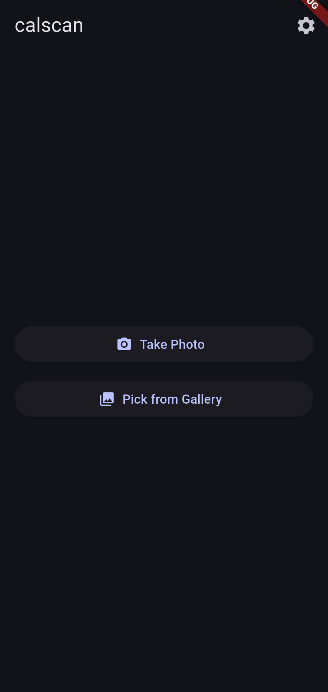

calscan.koirala.xyz
github repo
Scan event flyers and add them to your calendar... FAST!
CalScan is a privacy-focused cross-platform mobile app to directly convert
images of posters, flyers and announcements into a calendar event.
Coming to Google Play and App Stores soon (...I hope so!!!!).
Downloads
The Universal APK works for all android devices but comes with a larger size. For most modern phone the 64-bit ARM APK is the one you need.
Download Universal APK (~86.4MB).
Download the SHA1 File Checksum
Download 64-bit ARM APK (Modern Devices APK ~25.6MB).
Download the SHA1 File Checksum
Download 32-bit ARM APK (Legacy Devices APK ~32.5MB).
Download the SHA1 File Checksum
Download x86_64 APK (Computers and Emulators APK ~32.9MB).
Download the SHA1 File Checksum
Features
- Scan from your camera or gallery
- Crop the flyer before processing
- Extract key event details with OCR
- Review and edit the title, location, date, and time before saving
- Pick a default calendar and reminder settings
- Add events directly to your device calendar
- Export the event as an .ics file for sharing or backup
- No internet connection
- No server-side processing
- No third-party API dependency
- No LLM integration
Screenshots




Tech stack
Contribution and Contact
- Any contribution or feedback is deeply appreciated. (I am still learning Flutter)
- Email: anaya [at] koirala [dot] xyz
- Website: koirala.xyz
TODO
- Improve the OCR and Classification Heuristics
- Create a comprehensive test suite for all kinds of flyers
- User opt-in LLM integration for complex flyers (User provides the API Key)
- Improve overall look and feel, while keeping a minimalist design